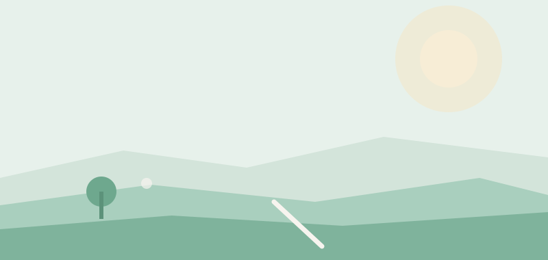

Du er ikke alene med det, der fylder
Angst og tankemylder er noget, rigtig mange unge kender. Ro i hovedet samler viden og konkrete idéer, så du kan passe på din mentale trivsel i dit eget tempo.
Se hvad du kan gøre
Hvad har du brug for lige nu?
Et lille skridt er også et skridt
Du behøver ikke at løse det hele på én gang. Vælg ét af områderne ovenfor, læs lidt, og tag det skridt, der føles muligt. Det gælder også, når du vil være der for en ven.
Har du brug for at tale med nogen nu, kan du ringe til Livslinien på 70 201 201. Ved akut fare ring 112.